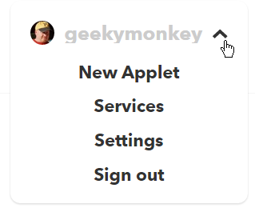
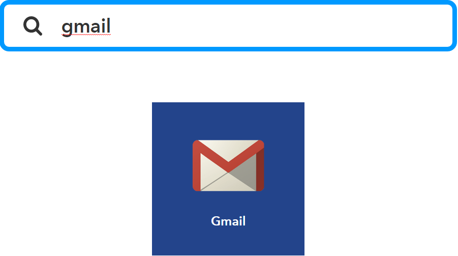

Introduction
In this tutorial we will configure IFTTT to send an email using a Gmail account whenever a special URL is hit.
This could be triggered by a web application, a phone application, an Arduino or Raspberry Pi with internet access. Anything that can make a web post request
IFTTT Account
IFTTT (If This Then That) is a free web service that allows you to set-up simple "applets" (previously known as recipes). An applet has two parts:
- Trigger
- Action
In this example, the Trigger will be someone making a special web request. Have a browse over IFTTT and see all of the other possible trigger sources.
Our Action is going to be to send an email
Applets are owned by users of the IFTTT service. So to get started, we'll need to set-up an account.
Go to https://ifttt.com/join and create an account using your email address. Or just sign-in if you already have an IFTTT account.

Once you're logged in, at the top right of the screen is your name. Click this to open the user menu. From here pick Services to see the list of services linked to your account.
Maker Service

On the All Services page you will see hundreds of service icons. There's a filter box at the top. Type "Maker" into the filter. The one on the left is what we're after. Click on this.

Inside the Maker Service is a Settings button at the top right.

Here you will see your account settings for the Maker service. Take note of the URL here (it's case sensitive). We're going to need that later. DO NOT PRESS the "Edit Connection" link . This will generate a fresh URL for you, and any current applets that you have with the old URL will stop working!
Gmail Service
Go back to the IFTTT Services List and search for GMail.
Once you click this, you'll have to log into the gmail account from which this applet will be sending its emails.
Create An Applet
In your user menu select New Applet.
If This
Press the "THIS" part of the applet to set-up the trigger.
From the "Choose a service" prompt, search for "Maker" and select it.
This should have only one trigger available called "Receive a web request". Select it.

In the "Event Name" prompt enter a reasonable name for the type of thing you're creating. This shold be all lowercase and not contain any spaces or special characters.
Then That
Press the "THAT" part of the applet to set-up the action.
Search for Gmail, and select the only action "Send an Email".

This is where we configure the email that will be sent.
In the "To Address" put in the email address that you want the message to be delivered to.
The Maker trigger provides us with a few "ingredients". These are just variables.
- EventName = The name of the event we entered above. In my case, this would output "send_feedback"
- OccurredAt = The date and time that the trigger event happened.
- Value1 = A value that we can pass into the Maker trigger. In my example, I'll use this for the message.
- Value2 = A value that we can pass into the Maker trigger.
- Value3 = A value that we can pass into the Maker trigger.
Format the subject and message however you like, optionally using the ingredients.
When you're done press the Create Action button.
Press the Finish button.

Your applet will now appear in your applet list and will be active. You can use the gear icon on the top right to change any of the setting.
Trigger It!
Anything that can create a web POST request can be used to trigger our applet. In my example, I'm going to run a little javascript to do this.
Below is my html and javascript on the left, and you can see this running on the right
<form">
<label>Feedback:</label>
<textarea id="FeedbackInput"></textarea>
<button onclick="sendit()">Send</button>
</form>
<script>
function sendit() {
var message = document.getElementById("FeedbackInput").value;
var key = "be3KEzxgue_zy3H4rfg9v8";
var message_name = "send_feedback";
var url = "https://maker.ifttt.com/trigger/" + message_name + "/with/key/" + key;
$.ajax({
url: url,
data: { value1: message },
dataType: "jsonp",
complete: function(jqXHR, textStatus) {
alert("Message Sent");
}
});
}
</script>
Other Options
- Rather than using IFTTT, you could use Microsoft Flow. It works pretty much the same.